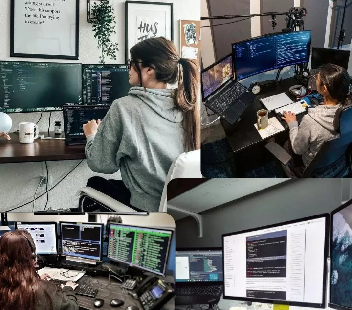

The final project will consist of 4 sections.
Each section has a deadline to complete. A complete description of the project can be
found on the course moodle site. It will consist of launching a website built with,
html, css, and javascript and hosted on github. This site is a benchmark for the Final
Project. See Project Specification on Moodle Site.
Project 1: NOT Gate
Project 2: AND Gate
Project 2: AND Gate -easy version
Project 3: Binary to Hexidecimal Converter
Project 4: ASCII Converter
Project 4: UNICODE Converter
Project 5: Machine Language Instructions Converter